<!DOCTYPE html>
<html lang="fa" dir="rtl">
<head>
<meta charset="UTF-8">
<meta name="viewport" content="width=device-width, initial-scale=1.0">
<title>آمار استنباطی — تجربه یادگیری تعاملی</title>
<style>
  :root{
    --bg-1:#0b1220;
    --bg-2:#060a12;
    --card-bg:rgba(15,23,42,.88);
    --card-bg-2:rgba(8,13,24,.96);
    --border:rgba(148,163,184,.18);
    --text:#e2e8f0;
    --text-dim:#94a3b8;
    --accent:#38bdf8;
    --accent-2:#fb7185;
    --accent-3:#facc15;
    --accent-4:#10b981;
    --accent-5:#a78bfa;
  }
  *{box-sizing:border-box; margin:0; padding:0;}
  html,body{height:100%; overflow:hidden;}
  body{
    font-family: Tahoma, "Segoe UI", sans-serif;
    color:var(--text);
    line-height:1.9;
    background:#060a12;
  }

  /* ===== BACKGROUND LAYERS ===== */
  #bgImage{
    position:fixed; inset:0; z-index:0; pointer-events:none;
    background-image:url('images/background.png');
    background-size:cover;
    background-position:center;
    opacity:.18;
    transition:opacity .8s ease;
  }
  #bgLayer{
    position:fixed; inset:0; z-index:1; pointer-events:none;
    transition:opacity .8s ease;
  }
  #bgLayer svg{width:100%; height:100%; display:block;}
  #bgLayerCanvas{
    position:fixed; inset:0; z-index:2; pointer-events:none;
    opacity:.55;
  }

  /* ===== NAV ===== */
  .nav{
    position:relative; z-index:20;
    background:rgba(11,18,32,.85);
    backdrop-filter:blur(12px);
    border-bottom:1px solid var(--border);
    padding:10px 20px;
    display:flex; flex-wrap:wrap; gap:10px; align-items:center;
  }
  .nav .brand{font-weight:800; color:#f1f5f9; margin-inline-end:auto; font-size:.95rem;}
  .nav .brand span{color:var(--accent);}
  .nav .progress-info{
    font-size:.75rem; color:var(--text-dim);
    padding:4px 12px; border-radius:20px;
    background:rgba(56,189,248,.1);
    border:1px solid rgba(56,189,248,.3);
  }

  /* ===== PAGES ===== */
  .pages-container{
    position:relative; z-index:10;
    height:calc(100vh - 58px);
    display:flex; align-items:center; justify-content:center;
    padding:20px;
  }
  .page{
    display:none;
    width:100%; max-width:1000px;
    max-height:calc(100vh - 100px);
    overflow-y:auto;
    background:var(--card-bg);
    backdrop-filter:blur(16px);
    border:1px solid var(--border);
    border-radius:22px;
    padding:30px;
    box-shadow:0 20px 46px -22px rgba(0,0,0,.95);
    animation:fadeUp .5s ease;
  }
  .page.active{display:block;}
  @keyframes fadeUp{
    from{opacity:0; transform:translateY(20px);}
    to{opacity:1; transform:translateY(0);}
  }
  .page::-webkit-scrollbar{width:6px;}
  .page::-webkit-scrollbar-thumb{background:rgba(56,189,248,.4); border-radius:10px;}

  /* ===== PAGE HEAD ===== */
  .page-head{
    display:flex; align-items:center; gap:14px; margin-bottom:20px;
    padding-bottom:16px; border-bottom:1px solid var(--border);
  }
  .page-head .num{
    width:46px;height:46px;border-radius:50%;display:grid;place-items:center;
    font-weight:800;font-size:1.1rem;color:#06101f;
    background:linear-gradient(135deg,var(--accent),var(--accent-5));
    box-shadow:0 0 18px rgba(56,189,248,.5);
    flex-shrink:0;
  }
  .page-head h2{margin:0; font-size:clamp(1.1rem,2.4vw,1.5rem); color:#f1f5f9;}
  .page-head p{margin:4px 0 0; color:var(--text-dim); font-size:.82rem;}

  /* ===== VIDEO BOX ===== */
  .video-box{
    background:linear-gradient(160deg,rgba(15,23,42,.92),rgba(8,13,24,.96));
    border:1px solid var(--border);
    border-radius:18px;
    padding:16px;
    margin-bottom:20px;
  }
  .video-box .label{
    display:flex; align-items:center; gap:8px;
    font-size:.82rem; font-weight:800; color:var(--accent-3);
    margin-bottom:10px;
  }
  .video-box .label .dot{
    width:8px;height:8px;border-radius:50%;background:var(--accent-3);
    box-shadow:0 0 10px var(--accent-3); animation:blink 1.4s infinite;
  }
  @keyframes blink{0%,100%{opacity:1}50%{opacity:.25}}
  .video-box video{
    width:100%; border-radius:12px; background:#000; display:block;
    aspect-ratio:16/9;
  }
  .video-box .placeholder{
    width:100%; aspect-ratio:16/9; border-radius:12px;
    border:2px dashed rgba(148,163,184,.3);
    display:grid; place-items:center; text-align:center;
    color:var(--text-dim); font-size:.82rem; padding:20px;
    background:rgba(15,23,42,.5);
  }
  .video-box .placeholder b{color:var(--accent-3); display:block; margin-bottom:6px;}

  /* ===== CARDS ===== */
  .grid-2{display:grid; grid-template-columns:repeat(auto-fit,minmax(280px,1fr)); gap:14px; margin:16px 0;}
  .grid-3{display:grid; grid-template-columns:repeat(auto-fit,minmax(220px,1fr)); gap:12px; margin:16px 0;}
  .concept-card{
    background:rgba(30,41,59,.55); border:1px solid var(--border);
    border-right:4px solid var(--accent);
    border-radius:14px; padding:15px;
  }
  .concept-card h3{margin:0 0 6px; font-size:.92rem; color:#f1f5f9;}
  .concept-card p{margin:0; font-size:.8rem; color:var(--text-dim); line-height:1.8;}
  .concept-card.warn{border-right-color:var(--accent-2);}
  .concept-card.good{border-right-color:var(--accent-4);}
  .concept-card.note{border-right-color:var(--accent-3);}

  /* ===== TABLE ===== */
  .compare-table{
    width:100%; border-collapse:collapse; margin:16px 0;
    background:rgba(15,23,42,.55); border-radius:14px; overflow:hidden;
    font-size:.82rem;
  }
  .compare-table th{
    background:linear-gradient(135deg,rgba(56,189,248,.25),rgba(167,139,250,.2));
    color:#f1f5f9; padding:11px; text-align:center; font-weight:800;
  }
  .compare-table td{
    padding:11px; text-align:center; color:var(--text-dim);
    border-top:1px solid var(--border);
  }

  /* ===== FORMULA ===== */
  .formula-box{
    background:rgba(15,23,42,.75); border:1px solid rgba(52,211,153,.4);
    border-radius:14px; padding:15px; text-align:center; margin:14px 0;
    font-family:'Cambria Math','Times New Roman',Georgia,serif;
    font-size:clamp(1rem,2vw,1.25rem); font-weight:800; color:#a7f3d0;
    direction:ltr; unicode-bidi:isolate;
  }
  .formula-box .label{
    display:block; direction:rtl; font-family:Tahoma,sans-serif;
    font-size:.72rem; color:var(--text-dim); margin-bottom:8px; font-weight:600;
  }

  /* ===== BUTTONS ===== */
  .next-wrap{
    display:flex; justify-content:center; gap:10px;
    margin-top:24px; padding-top:18px; border-top:1px solid var(--border);
    flex-wrap:wrap;
  }
  .btn{
    padding:12px 30px; border-radius:12px; border:1px solid rgba(56,189,248,.45);
    background:linear-gradient(135deg,rgba(56,189,248,.22),rgba(99,102,241,.22));
    color:#e0f2fe; font-family:inherit; font-size:.92rem; font-weight:800;
    cursor:pointer; transition:.22s;
  }
  .btn:hover{
    background:linear-gradient(135deg,rgba(56,189,248,.38),rgba(99,102,241,.38));
    box-shadow:0 0 26px -4px rgba(56,189,248,.7);
    transform:translateY(-2px);
  }
  .btn.ghost{
    background:transparent; border-color:var(--border); color:var(--text-dim);
  }
  .btn.ghost:hover{background:rgba(148,163,184,.1); color:var(--text);}

  /* ===== EXERCISE ===== */
  .exercise{
    display:grid; grid-template-columns:1fr 1fr; gap:16px;
    background:rgba(30,41,59,.55); border:1px solid var(--border);
    border-radius:16px; padding:18px; margin:16px 0;
  }
  @media(max-width:760px){.exercise{grid-template-columns:1fr;}}
  .exercise .q-side h3{font-size:.95rem; margin-bottom:10px; color:#f1f5f9;}
  .exercise .options{display:grid; gap:8px;}
  .exercise .option{
    text-align:right; padding:11px 14px; border-radius:10px;
    background:rgba(15,23,42,.65); border:1px solid var(--border);
    color:var(--text); font-family:inherit; font-size:.84rem;
    cursor:pointer; transition:.2s;
  }
  .exercise .option:hover:not(:disabled){background:rgba(56,189,248,.1); border-color:rgba(56,189,248,.4);}
  .exercise .option.correct{background:rgba(16,185,129,.25); border-color:var(--accent-4); color:#a7f3d0;}
  .exercise .option.wrong{background:rgba(251,113,133,.2); border-color:var(--accent-2); color:#fecaca;}
  .exercise .option:disabled{cursor:default; opacity:.7;}
  .exercise .img-side{
    background:rgba(8,13,24,.7); border-radius:14px;
    border:1px solid var(--border);
    display:flex; align-items:center; justify-content:center;
    min-height:220px; padding:14px; position:relative; overflow:hidden;
  }
  .exercise .img-side img{
    max-width:100%; max-height:100%; border-radius:10px; display:block;
  }

  /* ===== EXPLAIN ===== */
  .explain{
    grid-column:1 / -1;
    display:none;
    margin-top:14px; padding:16px 18px;
    border-radius:12px; font-size:.85rem; line-height:1.9;
    border:1px solid var(--border);
  }
  .explain.show{display:block; animation:fadeUp .4s;}
  .explain.ok{background:rgba(16,185,129,.12); border-color:rgba(16,185,129,.45); color:#d1fae5;}
  .explain.no{background:rgba(251,113,133,.12); border-color:rgba(251,113,133,.45); color:#fee2e2;}
  .explain b{color:#fff; display:block; margin-bottom:6px; font-size:.92rem;}
  .explain .compare-line{
    display:block; margin-top:8px; padding-right:14px;
    border-right:3px solid var(--accent-3); color:#fde68a; font-size:.82rem;
  }

  /* ===== PROGRESS DOTS ===== */
  .progress-dots{
    display:flex; justify-content:center; gap:8px;
    margin-top:18px; padding-top:14px; border-top:1px solid var(--border);
    flex-wrap:wrap;
  }
  .progress-dots .dot{
    width:10px;height:10px;border-radius:50%;
    background:rgba(148,163,184,.3); transition:.3s; cursor:pointer;
  }
  .progress-dots .dot.active{
    background:var(--accent); box-shadow:0 0 10px var(--accent);
    transform:scale(1.3);
  }
  .progress-dots .dot.done{background:var(--accent-4);}
</head>
<body>

<!-- ===== BACKGROUND LAYERS ===== -->
<div id="bgImage"></div>
<div id="bgLayer"></div>
<canvas id="bgLayerCanvas"></canvas>

<!-- ===== NAV ===== -->
<nav class="nav">
  <div class="brand">🎓 آمار استنباطی <span>| یازدهم ریاضی</span></div>
  <div class="progress-info" id="progressInfo">صفحه ۱ از ۱۰</div>
</nav>

<!-- ===== PAGES ===== -->
<div class="pages-container">

  <!-- ===== PAGE 1: چرا آمار استنباطی ===== -->
  <section class="page active" data-page="0" data-bg="grid">
    <div class="page-head">
      <div class="num">۱</div>
      <div>
        <h2>چرا آمار استنباطی؟</h2>
        <p>از توصیف داده‌ها تا تصمیم‌گیری درباره جامعه</p>
      </div>
    </div>

    <div class="video-box" data-video="videos/intro.mp4">
      <div class="label"><span class="dot"></span> ویدیوی معرفی — چرا آمار استنباطی؟</div>
      <div class="placeholder">
        <b>🎬 جای ویدیو</b>
        فایل ویدیو را در پوشه <code>videos/intro.mp4</code> قرار دهید.<br>
        یا مسیر را در <code>data-video</code> تغییر دهید.
      </div>
    </div>

    <div class="grid-3">
      <div class="concept-card good">
        <h3>📊 آمار توصیفی</h3>
        <p>داده‌ها را خلاصه و توصیف می‌کند. اما نمی‌تواند نتیجه را به خارج از داده‌های مشاهده‌شده تعمیم دهد.</p>
      </div>
      <div class="concept-card note">
        <h3>🎯 آمار استنباطی</h3>
        <p>بر اساس یک <b>نمونه</b>، درباره <b>پارامتر</b> جامعه نتیجه‌گیری می‌کند.</p>
      </div>
      <div class="concept-card warn">
        <h3>⚠️ چرا سرشماری نه؟</h3>
        <p>سرشماری وقت‌گیر، پرهزینه و گاهی غیرممکن است. پس ناچاریم از نمونه استفاده کنیم.</p>
      </div>
    </div>

    <div class="next-wrap">
      <button class="btn" onclick="goToPage(1)">ادامه یادگیری ➡</button>
    </div>
    <div class="progress-dots" id="dots0"></div>
  </section>

  <!-- ===== PAGE 2: جامعه و نمونه ===== -->
  <section class="page" data-page="1" data-bg="clusters">
    <div class="page-head">
      <div class="num">۲</div>
      <div>
        <h2>جامعه، نمونه و روش‌های نمونه‌گیری</h2>
        <p>تصادفی ساده، خوشه‌ای، طبقه‌ای، سیستماتیک</p>
      </div>
    </div>

    <div class="video-box" data-video="videos/sampling.mp4">
      <div class="label"><span class="dot"></span> ویدیوی دوم — جامعه و نمونه</div>
      <div class="placeholder">
        <b>🎬 جای ویدیو</b>
        فایل ویدیو را در پوشه <code>videos/sampling.mp4</code> قرار دهید.
      </div>
    </div>

    <div class="grid-3">
      <div class="concept-card"><h3>👥 جامعه آماری</h3><p>مجموعه کل واحدهای آماری.</p></div>
      <div class="concept-card"><h3>🔍 نمونه</h3><p>زیرمجموعه‌ای از جامعه که با روش مشخص انتخاب می‌شود.</p></div>
      <div class="concept-card note"><h3>🎲 نمونه‌گیری</h3><p>فرایند انتخاب نمونه برای تعمیم اطلاعات به جامعه.</p></div>
    </div>

    <table class="compare-table">
      <thead><tr><th>روش</th><th>ویژگی کلیدی</th><th>مثال</th></tr></thead>
      <tbody>
        <tr><td style="color:#38bdf8; font-weight:800;">تصادفی ساده</td><td>همه شانس برابر دارند</td><td>قرعه‌کشی ۵ نفر از ۲۰ نفر</td></tr>
        <tr><td style="color:#a78bfa; font-weight:800;">خوشه‌ای</td><td>انتخاب چند خوشه، بررسی <b>همه</b> اعضا</td><td>۵ مدرسه از ۲۰ مدرسه</td></tr>
        <tr><td style="color:#10b981; font-weight:800;">طبقه‌ای</td><td>تقسیم به طبقات همگن، نمونه از هر طبقه</td><td>دختر/پسر و نمونه از هر گروه</td></tr>
        <tr><td style="color:#facc15; font-weight:800;">سیستماتیک</td><td>فواصل ثابت، شروع تصادفی</td><td>هر ۵ نفر یک نفر از ۱۰۰ نفر</td></tr>
      </tbody>
    </table>

    <div class="next-wrap">
      <button class="btn ghost" onclick="goToPage(0)">⬅ بازگشت</button>
      <button class="btn" onclick="goToPage(2)">ادامه یادگیری ➡</button>
    </div>
    <div class="progress-dots" id="dots1"></div>
  </section>

  <!-- ===== PAGE 3: انیمیشن سیستماتیک ===== -->
  <section class="page" data-page="2" data-bg="grid">
    <div class="page-head">
      <div class="num">۳</div>
      <div>
        <h2>آزمایشگاه نمونه‌گیری سیستماتیک</h2>
        <p>روی یکی از ۴ مستطیل کلیک کنید تا انتخاب زنده را ببینید</p>
      </div>
    </div>

    <div class="concept-card note" style="margin-bottom:16px;">
      <h3>📌 نمونه‌گیری سیستماتیک</h3>
      <p>۱۰۰ نفر در ۲۰ گروه ۵ نفره. یک نقطه شروع تصادفی انتخاب می‌شود و سپس هر ۵ نفر یکی وارد نمونه می‌شود.</p>
    </div>

    <div class="systematic-container">
      <div class="groups-grid" id="groupsGrid"></div>
      
      <div class="start-buttons">
        <p style="color:#94a3b8; font-size:.85rem; margin-bottom:10px;">یک نقطه شروع انتخاب کنید:</p>
        <div class="start-row" id="startRow"></div>
      </div>

      <div class="selected-info" id="selectedInfo">
        <p>هنوز انتخابی انجام نشده است.</p>
      </div>

      <div class="next-wrap">
        <button class="btn ghost" onclick="resetSystematic()">🔄 شروع مجدد</button>
      </div>
    </div>

    <div class="next-wrap">
      <button class="btn ghost" onclick="goToPage(1)">⬅ بازگشت</button>
      <button class="btn" onclick="goToPage(3)">ادامه یادگیری ➡</button>
    </div>
    <div class="progress-dots" id="dots2"></div>
  </section>

  <!-- ===== PAGE 4: اریب ===== -->
  <section class="page" data-page="3" data-bg="bias">
    <div class="page-head">
      <div class="num">۴</div>
      <div>
        <h2>اریب بودن (Bias)</h2>
        <p>وقتی نمونه‌گیری اشتباه می‌شود</p>
      </div>
    </div>

    <div class="video-box" data-video="videos/bias.mp4">
      <div class="label"><span class="dot"></span> ویدیوی سوم — اریب و مثال‌های واقعی</div>
      <div class="placeholder">
        <b>🎬 جای ویدیو</b>
        فایل ویدیو را در پوشه <code>videos/bias.mp4</code> قرار دهید.
      </div>
    </div>

    <div class="grid-2">
      <div class="concept-card warn">
        <h3>🚗 مثال ۱: طرح ترافیک</h3>
        <p>نمونه از محدوده طرح ترافیک ← اکثراً از وسایل نقلیه عمومی استفاده می‌کنند. نتیجه اریب می‌شود.</p>
      </div>
      <div class="concept-card warn">
        <h3>🏠 مثال ۲: خانواده‌های روستا</h3>
        <p>خانواده‌های پرجمعیت شانس بیشتری برای انتخاب دارند. بعد خانوار بیشتر از واقعیت برآورد می‌شود.</p>
      </div>
      <div class="concept-card warn">
        <h3>🎓 مثال ۳: مدرسه</h3>
        <p>کلاس‌های پرجمعیت‌تر شانس بیشتری دارند و نتیجه اریب می‌شود.</p>
      </div>
      <div class="concept-card good">
        <h3>✅ راه‌حل</h3>
        <p>در روستا: فقط یک نفر از هر خانواده. در مدرسه: تعداد برابر از هر کلاس.</p>
      </div>
    </div>

    <div class="formula-box">
      <span class="label">تعبیر اریب</span>
      اریب = انحراف مقدار برآورد از مقدار واقعی پارامتر جامعه
    </div>

    <div class="next-wrap">
      <button class="btn ghost" onclick="goToPage(2)">⬅ بازگشت</button>
      <button class="btn" onclick="goToPage(4)">ادامه یادگیری ➡</button>
    </div>
    <div class="progress-dots" id="dots3"></div>
  </section>

  <!-- ===== PAGE 5: پارامتر، آماره، برآورد ===== -->
  <section class="page" data-page="4" data-bg="estimation">
    <div class="page-head">
      <div class="num">۵</div>
      <div>
        <h2>پارامتر، آماره و برآورد</h2>
        <p>برآورد نقطه‌ای و بازه‌ای</p>
      </div>
    </div>

    <div class="video-box" data-video="videos/estimation.mp4">
      <div class="label"><span class="dot"></span> ویدیوی چهارم — برآورد</div>
      <div class="placeholder">
        <b>🎬 جای ویدیو</b>
        فایل ویدیو را در پوشه <code>videos/estimation.mp4</code> قرار دهید.
      </div>
    </div>

    <div class="grid-2">
      <div class="concept-card"><h3>🔒 پارامتر</h3><p>مشخصه عددی <b>جامعه</b>. ثابت ولی مجهول. مثل μ.</p></div>
      <div class="concept-card"><h3>📊 آماره</h3><p>مشخصه عددی <b>نمونه</b>. متغیر. مثل x̄.</p></div>
    </div>

    <div style="text-align:center; margin:16px 0;">
      
      <p style="font-size:.78rem; color:#94a3b8; margin-top:8px;">چرخه استنباط آماری — صفحه ۲۸ جزوه</p>
    </div>

    <h3 style="color:#f1f5f9; margin-top:20px;">برآورد نقطه‌ای و توزیع آماره</h3>
    <p style="color:var(--text-dim); font-size:.85rem;">با افزایش حجم نمونه، توزیع آماره باریک‌تر و برآورد دقیق‌تر می‌شود.</p>

    <div class="grid-2">
      <div style="text-align:center;">
        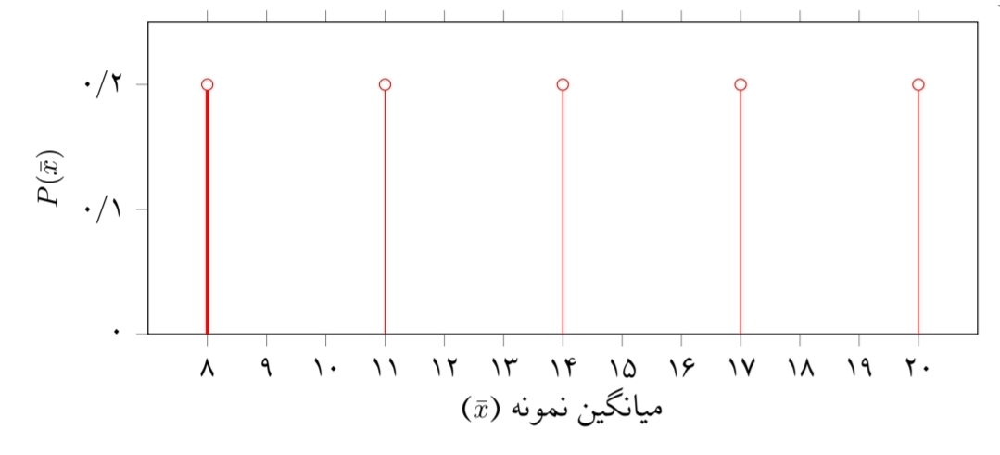
        <p style="font-size:.75rem; color:#94a3b8; margin-top:6px;">نمونه‌های تک‌عضوی</p>
      </div>
      <div style="text-align:center;">
        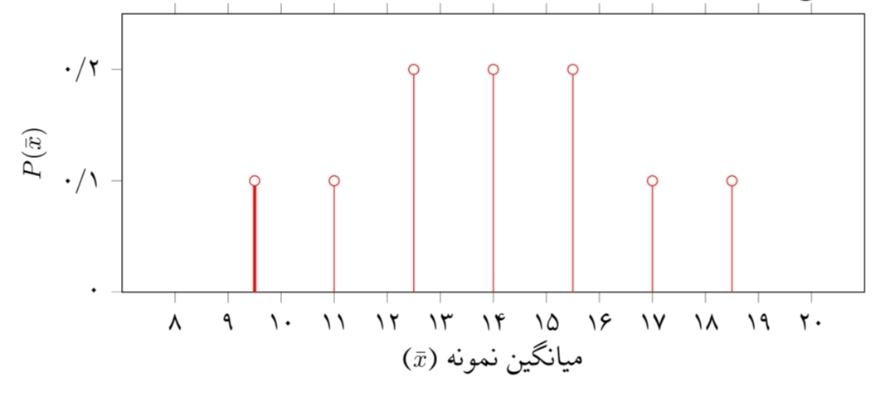
        <p style="font-size:.75rem; color:#94a3b8; margin-top:6px;">نمونه‌های دو‌عضوی</p>
      </div>
      <div style="text-align:center;">
        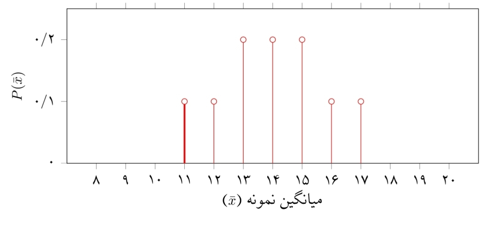
        <p style="font-size:.75rem; color:#94a3b8; margin-top:6px;">نمونه‌های سه‌عضوی</p>
      </div>
      <div style="text-align:center;">
        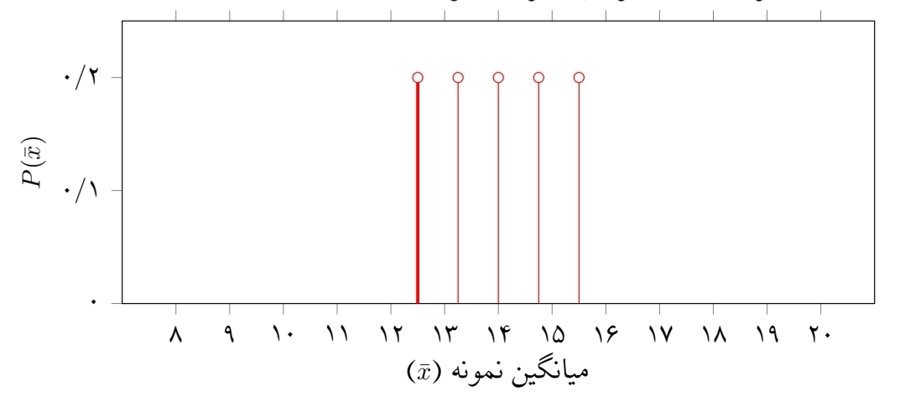
        <p style="font-size:.75rem; color:#94a3b8; margin-top:6px;">نمونه‌های چهار‌عضوی</p>
      </div>
    </div>

    <div style="text-align:center; margin:16px 0;">
      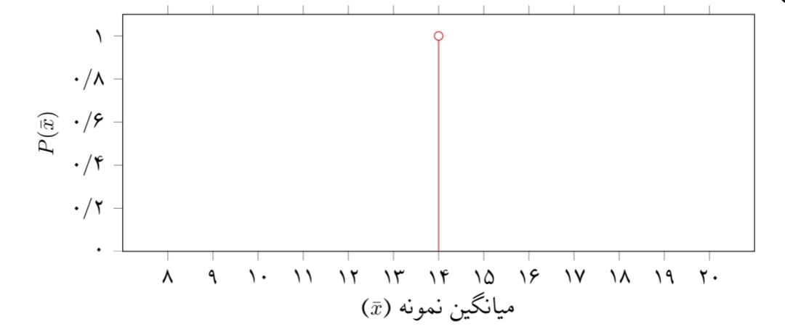
      <p style="font-size:.78rem; color:#94a3b8; margin-top:8px;">نمونه‌های پنج‌عضوی — برآورد دقیق‌تر (صفحه ۴۱)</p>
    </div>

    <div class="formula-box">
      <span class="label">انحراف معیار میانگین (برآورد)</span>
      σ<sub>x̄</sub> = σ / √n
    </div>

    <div class="next-wrap">
      <button class="btn ghost" onclick="goToPage(3)">⬅ بازگشت</button>
      <button class="btn" onclick="goToPage(5)">ادامه یادگیری ➡</button>
    </div>
    <div class="progress-dots" id="dots4"></div>
  </section>

  <!-- ===== PAGE 6: شکل توزیع ===== -->
  <section class="page" data-page="5" data-bg="estimation">
    <div class="page-head">
      <div class="num">۶</div>
      <div>
        <h2>شکل توزیع داده‌ها</h2>
        <p>از بافت‌نگاشت تا منحنی نرمال</p>
      </div>
    </div>

    <div class="concept-card note" style="margin-bottom:16px;">
      <h3>📊 بافت‌نگاشت و چندبر فراوانی</h3>
      <p>وقتی داده‌های نمرات ۲۴ دانش‌آموز را در بازه‌های مساوی نمایش می‌دهیم، بافت‌نگاشت زیر به دست می‌آید. با اتصال وسط مستطیل‌ها، چندبر فراوانی رسم می‌شود.</p>
    </div>

    <div style="text-align:center; margin:16px 0;">
      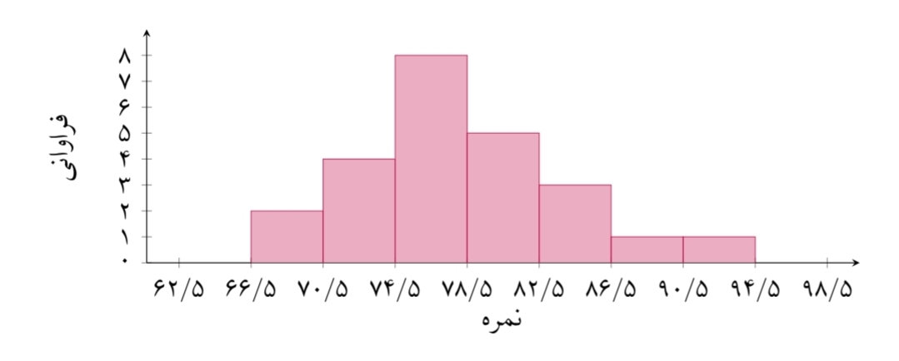
      <p style="font-size:.78rem; color:#94a3b8; margin-top:8px;">بافت‌نگاشت فراوانی نمرات (صفحه ۵۰)</p>
    </div>

    <div style="text-align:center; margin:16px 0;">
      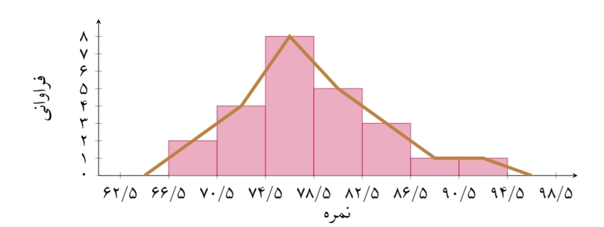
      <p style="font-size:.78rem; color:#94a3b8; margin-top:8px;">چندبر فراوانی — خط قهوه‌ای (صفحه ۵۰)</p>
    </div>

    <h3 style="color:#f1f5f9; margin-top:24px;">انواع شکل توزیع</h3>
    <div class="grid-3">
      <div style="text-align:center;">
        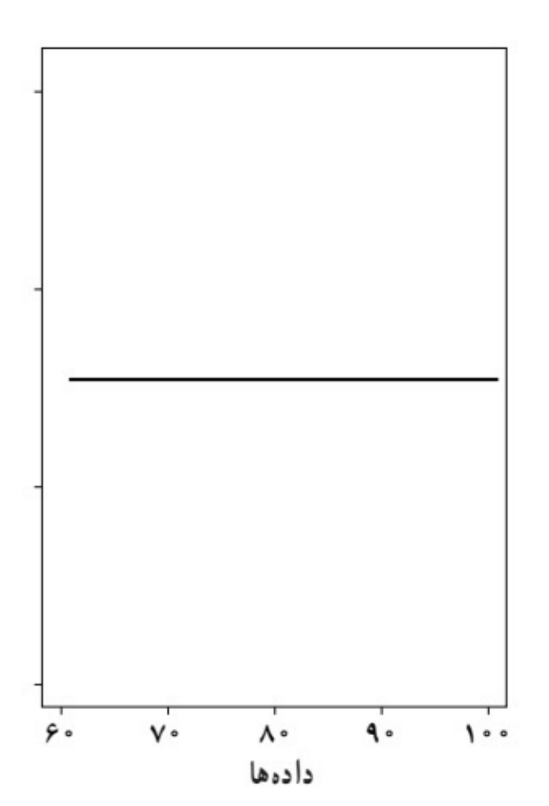
        <p style="font-size:.8rem; color:#38bdf8; margin-top:6px; font-weight:800;">یکنواخت</p>
      </div>
      <div style="text-align:center;">
        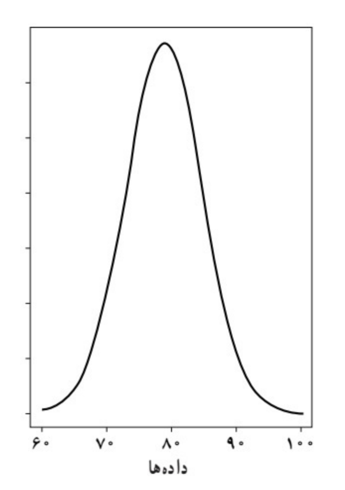
        <p style="font-size:.8rem; color:#10b981; margin-top:6px; font-weight:800;">نرمال</p>
      </div>
      <div style="text-align:center;">
        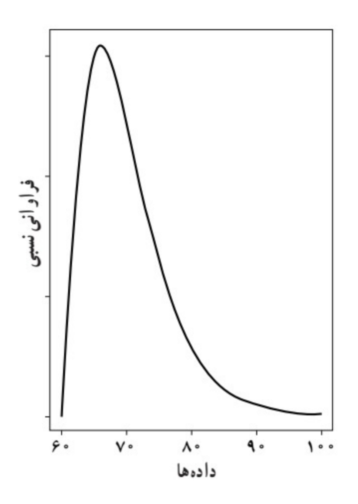
        <p style="font-size:.8rem; color:#fb7185; margin-top:6px; font-weight:800;">چوله (نامتقارن)</p>
      </div>
    </div>

    <div class="exercise" data-correct="1" style="margin-top:20px;">
      <div class="q-side">
        <h3>❓ اگر داده‌ها زیاد شوند، چندبر فراوانی به کدام نمودار شبیه‌تر می‌شود؟</h3>
        <div class="options">
          <button class="option" data-i="0">یکنواخت</button>
          <button class="option" data-i="1">نرمال</button>
          <button class="option" data-i="2">چوله</button>
          <button class="option" data-i="3">هیچ‌کدام</button>
        </div>
      </div>
      <div class="img-side">
        
      </div>
      <div class="explain"></div>
    </div>

    <div class="next-wrap">
      <button class="btn ghost" onclick="goToPage(4)">⬅ بازگشت</button>
      <button class="btn" onclick="goToPage(6)">ادامه یادگیری ➡</button>
    </div>
    <div class="progress-dots" id="dots5"></div>
  </section>

  <!-- ===== PAGE 7: بازه اطمینان ===== -->
  <section class="page" data-page="6" data-bg="summary">
    <div class="page-head">
      <div class="num">۷</div>
      <div>
        <h2>بازه اطمینان</h2>
        <p>تعبیر شهودی ۹۵٪</p>
      </div>
    </div>

    <div class="video-box" data-video="videos/confidence.mp4">
      <div class="label"><span class="dot"></span> ویدیوی پنجم — بازه اطمینان</div>
      <div class="placeholder">
        <b>🎬 جای ویدیو</b>
        فایل ویدیو را در پوشه <code>videos/confidence.mp4</code> قرار دهید.
      </div>
    </div>

    <div class="formula-box">
      <span class="label">بازه اطمینان ۹۵٪ برای میانگین جامعه</span>
      x̄ − (2σ / √n) ≤ μ ≤ x̄ + (2σ / √n)
    </div>

    <div class="grid-2">
      <div class="concept-card good"><h3>📈 افزایش n</h3><p>بازه باریک‌تر، برآورد دقیق‌تر.</p></div>
      <div class="concept-card warn"><h3>📉 افزایش σ</h3><p>بازه پهن‌تر، برآورد کم‌دقت‌تر.</p></div>
    </div>

    <div style="text-align:center; margin:16px 0;">
      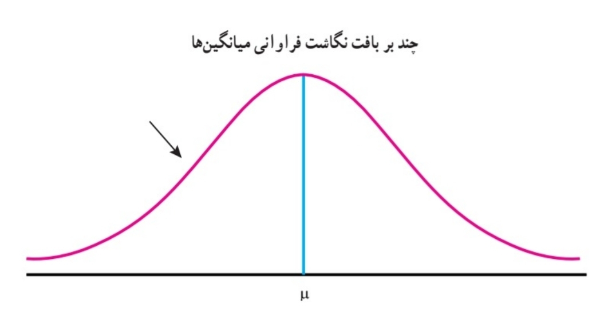
      <p style="font-size:.78rem; color:#94a3b8; margin-top:8px;">توزیع میانگین‌های نمونه‌ها حول میانگین جامعه μ (صفحه ۵۰)</p>
    </div>

    <div style="text-align:center; margin:16px 0;">
      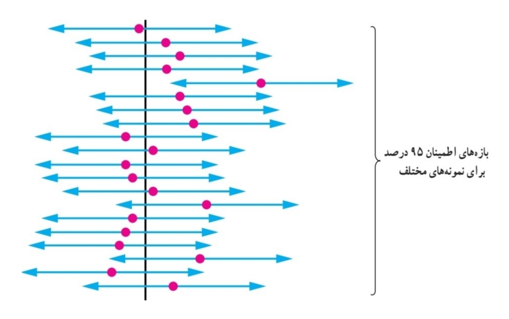
      <p style="font-size:.78rem; color:#94a3b8; margin-top:8px;">۲۰ بازه اطمینان ۹۵٪ — ۱۹ تا خط μ را قطع کرده‌اند (صفحه ۵۱)</p>
    </div>

    <div class="exercise" data-correct="0" style="margin-top:20px;">
      <div class="q-side">
        <h3>❓ در تصویر بالا، چند پاره‌خط آبی خط سیاه (μ) را قطع نکرده‌اند؟</h3>
        <div class="options">
          <button class="option" data-i="0">۱</button>
          <button class="option" data-i="1">۲</button>
          <button class="option" data-i="2">۵</button>
          <button class="option" data-i="3">۱۹</button>
        </div>
      </div>
      <div class="img-side">
        
      </div>
      <div class="explain"></div>
    </div>

    <div class="next-wrap">
      <button class="btn ghost" onclick="goToPage(5)">⬅ بازگشت</button>
      <button class="btn" onclick="goToPage(7)">ادامه یادگیری ➡</button>
    </div>
    <div class="progress-dots" id="dots6"></div>
  </section>

  <!-- ===== PAGE 8: تمرین‌های تعاملی ===== -->
  <section class="page" data-page="7" data-bg="quiz">
    <div class="page-head">
      <div class="num">۸</div>
      <div>
        <h2>تمرین‌های تعاملی</h2>
        <p>دانش خود را محک بزنید</p>
      </div>
    </div>

    <!-- Exercise 1 -->
    <div class="exercise" data-correct="1">
      <div class="q-side">
        <h3>۱. احتمال انتخاب هر فرد در نمونه‌گیری تصادفی ساده؟</h3>
        <div class="options">
          <button class="option" data-i="0">N / k</button>
          <button class="option" data-i="1">k / N</button>
          <button class="option" data-i="2">N − k</button>
          <button class="option" data-i="3">1 / N</button>
        </div>
      </div>
      <div class="img-side">
        <div style="text-align:center; color:#94a3b8; font-size:.85rem;">
          <div style="font-size:3rem;">🎲</div>
          <p>قرعه‌کشی از میان N واحد</p>
        </div>
      </div>
      <div class="explain"></div>
    </div>

    <!-- Exercise 2 -->
    <div class="exercise" data-correct="2">
      <div class="q-side">
        <h3>۲. نمونه از یک دانشگاه خاص ← چه مشکلی؟</h3>
        <div class="options">
          <button class="option" data-i="0">حجم نمونه کم است</button>
          <button class="option" data-i="1">داده‌ها دقیق نیستند</button>
          <button class="option" data-i="2">نمونه اریب می‌شود</button>
          <button class="option" data-i="3">هیچ مشکلی نیست</button>
        </div>
      </div>
      <div class="img-side">
        <div style="text-align:center; color:#94a3b8; font-size:.85rem;">
          <div style="font-size:3rem;">🏛️</div>
          <p>فقط یک دانشگاه از شهر</p>
        </div>
      </div>
      <div class="explain"></div>
    </div>

    <!-- Exercise 3 -->
    <div class="exercise" data-correct="1">
      <div class="q-side">
        <h3>۳. اگر اندازه نمونه ۴ برابر شود، انحراف معیار برآورد؟</h3>
        <div class="options">
          <button class="option" data-i="0">۴ برابر</button>
          <button class="option" data-i="1">نصف</button>
          <button class="option" data-i="2">۲ برابر</button>
          <button class="option" data-i="3">تغییری نمی‌کند</button>
        </div>
      </div>
      <div class="img-side">
        <div style="text-align:center; color:#94a3b8; font-size:.85rem;">
          <div style="font-size:3rem;">📉</div>
          <p>σ<sub>x̄</sub> = σ / √n</p>
        </div>
      </div>
      <div class="explain"></div>
    </div>

    <!-- Exercise 4 -->
    <div class="exercise" data-correct="3">
      <div class="q-side">
        <h3>۴. کدام روش برای جامعه طبقه‌بندی‌شده مناسب‌تر است؟</h3>
        <div class="options">
          <button class="option" data-i="0">تصادفی ساده</button>
          <button class="option" data-i="1">خوشه‌ای</button>
          <button class="option" data-i="2">سیستماتیک</button>
          <button class="option" data-i="3">طبقه‌ای</button>
        </div>
      </div>
      <div class="img-side">
        <div style="text-align:center; color:#94a3b8; font-size:.85rem;">
          <div style="font-size:3rem;">📊</div>
          <p>طبقات همگن</p>
        </div>
      </div>
      <div class="explain"></div>
    </div>

    <!-- Exercise 5 -->
    <div class="exercise" data-correct="2">
      <div class="q-side">
        <h3>۵. σ = ۳ و n = ۹۰۰ ← انحراف معیار برآورد؟</h3>
        <div class="options">
          <button class="option" data-i="0">۳</button>
          <button class="option" data-i="1">۰٫۳</button>
          <button class="option" data-i="2">۰٫۱</button>
          <button class="option" data-i="3">۰٫۰۱</button>
        </div>
      </div>
      <div class="img-side">
        <div style="text-align:center; color:#94a3b8; font-size:.85rem;">
          <div style="font-size:3rem;">🧮</div>
          <p>σ<sub>x̄</sub> = ۳ / √۹۰۰</p>
        </div>
      </div>
      <div class="explain"></div>
    </div>

    <div class="next-wrap">
      <button class="btn ghost" onclick="goToPage(6)">⬅ بازگشت</button>
      <button class="btn" onclick="goToPage(8)">ادامه یادگیری ➡</button>
    </div>
    <div class="progress-dots" id="dots7"></div>
  </section>

  <!-- ===== PAGE 9: جمع‌بندی ===== -->
  <section class="page" data-page="8" data-bg="summary">
    <div class="page-head">
      <div class="num">۹</div>
      <div>
        <h2>جمع‌بندی</h2>
        <p>آنچه یاد گرفتیم</p>
      </div>
    </div>

    <div class="grid-3">
      <div class="concept-card good"><h3>✅ نمونه‌گیری درست</h3><p>تصادفی، خوشه‌ای، طبقه‌ای، سیستماتیک</p></div>
      <div class="concept-card note"><h3>✅ برآورد</h3><p>نقطه‌ای و بازه‌ای</p></div>
      <div class="concept-card"><h3>✅ پرهیز از اریب</h3><p>شناسایی منابع سوگیری</p></div>
    </div>

    <div class="formula-box">
      <span class="label">مثال حل‌شده</span>
      x̄ = 22, σ = 2, n = 25 → بازه: 21.2 تا 22.8
    </div>

    <div class="next-wrap">
      <button class="btn ghost" onclick="goToPage(7)">⬅ بازگشت</button>
      <button class="btn" onclick="goToPage(0)">🔄 شروع دوباره</button>
    </div>
    <div class="progress-dots" id="dots8"></div>
  </section>

</div>

</body>
</html>
<!-- ===== CSS اضافی برای انیمیشن سیستماتیک ===== -->
<style>
  .systematic-container{
    background:rgba(15,23,42,.7); border:1px solid var(--border);
    border-radius:18px; padding:20px; margin:16px 0;
  }
  .groups-grid{
    display:grid; grid-template-columns:repeat(5, 1fr);
    gap:10px; margin-bottom:20px;
  }
  @media(max-width:600px){.groups-grid{grid-template-columns:repeat(5, 1fr); gap:5px;}}
  
  .group-box{
    background:rgba(30,41,59,.6); border:1px solid var(--border);
    border-radius:10px; padding:8px 4px;
    display:flex; flex-direction:column; align-items:center; gap:4px;
    transition:.3s;
  }
  .group-box.selected{
    background:rgba(250,204,21,.2); border-color:var(--accent-3);
    box-shadow:0 0 15px rgba(250,204,21,.4);
  }
  .group-box.start-point{
    background:rgba(16,185,129,.2); border-color:var(--accent-4);
    box-shadow:0 0 15px rgba(16,185,129,.4);
  }
  .group-num{
    font-size:.7rem; color:var(--text-dim); font-weight:800;
  }
  .group-box.selected .group-num,
  .group-box.start-point .group-num{color:#fff;}
  .group-dots{
    display:flex; gap:3px; flex-wrap:wrap; justify-content:center;
  }
  .group-dot{
    width:6px; height:6px; border-radius:50%;
    background:rgba(148,163,184,.4);
    transition:.3s;
  }
  .group-box.selected .group-dot{background:var(--accent-3); box-shadow:0 0 8px var(--accent-3);}
  .group-box.start-point .group-dot{background:var(--accent-4); box-shadow:0 0 8px var(--accent-4);}

  .start-buttons{margin:20px 0; text-align:center;}
  .start-row{
    display:flex; justify-content:center; gap:12px; flex-wrap:wrap;
  }
  .start-btn{
    width:60px; height:60px; border-radius:12px;
    background:rgba(30,41,59,.8); border:2px solid var(--border);
    color:#fff; font-size:1.4rem; font-weight:800;
    cursor:pointer; transition:.25s;
    font-family:inherit;
  }
  .start-btn:hover:not(:disabled){
    background:rgba(56,189,248,.2); border-color:var(--accent);
    transform:translateY(-3px);
  }
  .start-btn:disabled{opacity:.4; cursor:not-allowed;}
  .start-btn.active{
    background:rgba(16,185,129,.3); border-color:var(--accent-4);
    box-shadow:0 0 20px rgba(16,185,129,.5);
  }

  .selected-info{
    background:rgba(8,13,24,.7); border-radius:10px;
    padding:14px; text-align:center;
    border:1px solid var(--border);
    font-size:.85rem; color:var(--text-dim);
    min-height:60px;
    display:flex; align-items:center; justify-content:center;
  }
  .selected-info.active{
    color:#fde68a; border-color:rgba(250,204,21,.4);
    background:rgba(250,204,21,.08);
  }
  .selected-info b{color:var(--accent-3); font-size:1.05rem; margin:0 3px;}
</style>

<!-- ===== JAVASCRIPT ===== -->
<script>
/* ============================================
   BACKGROUND SVG TEMPLATES
   ============================================ */
const bgTemplates = {
  grid: `<svg xmlns="http://www.w3.org/2000/svg" viewBox="0 0 1200 800" preserveAspectRatio="xMidYMid slice">
    <defs>
      <linearGradient id="bgG1" x1="0%" y1="0%" x2="100%" y2="100%">
        <stop offset="0%" stop-color="#0b1220"/>
        <stop offset="100%" stop-color="#1e293b"/>
      </linearGradient>
      <pattern id="gridP" width="40" height="40" patternUnits="userSpaceOnUse">
        <path d="M 40 0 L 0 0 0 40" fill="none" stroke="#38bdf8" stroke-width="0.5" opacity="0.15"/>
      </pattern>
    </defs>
    <rect width="1200" height="800" fill="url(#bgG1)"/>
    <rect width="1200" height="800" fill="url(#gridP)"/>
    <circle cx="200" cy="200" r="180" fill="#38bdf8" opacity="0.04"/>
    <circle cx="1000" cy="600" r="220" fill="#a78bfa" opacity="0.05"/>
    <path d="M 0 400 Q 300 300 600 400 T 1200 400" fill="none" stroke="#38bdf8" stroke-width="1.5" opacity="0.15"/>
  </svg>`,
  clusters: `<svg xmlns="http://www.w3.org/2000/svg" viewBox="0 0 1200 800" preserveAspectRatio="xMidYMid slice">
    <defs>
      <linearGradient id="bgG2" x1="0%" y1="0%" x2="100%" y2="100%">
        <stop offset="0%" stop-color="#0b1220"/>
        <stop offset="100%" stop-color="#1e1b4b"/>
      </linearGradient>
    </defs>
    <rect width="1200" height="800" fill="url(#bgG2)"/>
    <g opacity="0.15">
      <circle cx="200" cy="200" r="100" fill="none" stroke="#38bdf8" stroke-width="2" stroke-dasharray="6 4"/>
      <circle cx="500" cy="300" r="120" fill="none" stroke="#a78bfa" stroke-width="2" stroke-dasharray="6 4"/>
      <circle cx="850" cy="200" r="90" fill="none" stroke="#10b981" stroke-width="2" stroke-dasharray="6 4"/>
      <circle cx="300" cy="600" r="110" fill="none" stroke="#fb7185" stroke-width="2" stroke-dasharray="6 4"/>
      <circle cx="750" cy="600" r="130" fill="none" stroke="#facc15" stroke-width="2" stroke-dasharray="6 4"/>
    </g>
  </svg>`,
  bias: `<svg xmlns="http://www.w3.org/2000/svg" viewBox="0 0 1200 800" preserveAspectRatio="xMidYMid slice">
    <defs>
      <linearGradient id="bgG3" x1="0%" y1="0%" x2="100%" y2="100%">
        <stop offset="0%" stop-color="#1a0b0b"/>
        <stop offset="100%" stop-color="#0b1220"/>
      </linearGradient>
    </defs>
    <rect width="1200" height="800" fill="url(#bgG3)"/>
    <path d="M 100 600 Q 400 200 600 400 Q 800 600 1100 600" fill="none" stroke="#fb7185" stroke-width="2" opacity="0.25"/>
  </svg>`,
  estimation: `<svg xmlns="http://www.w3.org/2000/svg" viewBox="0 0 1200 800" preserveAspectRatio="xMidYMid slice">
    <defs>
      <linearGradient id="bgG4" x1="0%" y1="0%" x2="100%" y2="100%">
        <stop offset="0%" stop-color="#0b1a1a"/>
        <stop offset="100%" stop-color="#0b1220"/>
      </linearGradient>
    </defs>
    <rect width="1200" height="800" fill="url(#bgG4)"/>
    <path d="M 100 600 Q 400 100 600 100 Q 800 100 1100 600" fill="none" stroke="#10b981" stroke-width="2.5" opacity="0.35"/>
    <line x1="600" y1="200" x2="600" y2="600" stroke="#a7f3d0" stroke-width="1" stroke-dasharray="6 4" opacity="0.3"/>
  </svg>`,
  quiz: `<svg xmlns="http://www.w3.org/2000/svg" viewBox="0 0 1200 800" preserveAspectRatio="xMidYMid slice">
    <defs>
      <linearGradient id="bgG5" x1="0%" y1="0%" x2="100%" y2="100%">
        <stop offset="0%" stop-color="#1a150b"/>
        <stop offset="100%" stop-color="#0b1220"/>
      </linearGradient>
    </defs>
    <rect width="1200" height="800" fill="url(#bgG5)"/>
    <g fill="#facc15" opacity="0.06" font-family="Georgia" font-size="120" font-weight="bold">
      <text x="150" y="250">?</text>
      <text x="500" y="450">?</text>
      <text x="850" y="200">?</text>
      <text x="1050" y="600">?</text>
    </g>
  </svg>`,
  summary: `<svg xmlns="http://www.w3.org/2000/svg" viewBox="0 0 1200 800" preserveAspectRatio="xMidYMid slice">
    <defs>
      <linearGradient id="bgG6" x1="0%" y1="0%" x2="100%" y2="100%">
        <stop offset="0%" stop-color="#0b1220"/>
        <stop offset="100%" stop-color="#1e1b4b"/>
      </linearGradient>
    </defs>
    <rect width="1200" height="800" fill="url(#bgG6)"/>
    <g stroke="#38bdf8" stroke-width="1" opacity="0.25" fill="none">
      <path d="M 200 200 L 400 300 L 600 250 L 800 350 L 1000 300"/>
      <path d="M 300 500 L 500 450 L 700 550 L 900 500"/>
    </g>
    <g fill="#38bdf8" opacity="0.5">
      <circle cx="200" cy="200" r="4"/><circle cx="400" cy="300" r="4"/>
      <circle cx="600" cy="250" r="4"/><circle cx="800" cy="350" r="4"/>
      <circle cx="1000" cy="300" r="4"/><circle cx="300" cy="500" r="4"/>
      <circle cx="500" cy="450" r="4"/><circle cx="700" cy="550" r="4"/>
      <circle cx="900" cy="500" r="4"/>
    </g>
  </svg>`
};

/* ============================================
   PAGE NAVIGATION
   ============================================ */
const pages = document.querySelectorAll('.page');
const totalPages = pages.length;
let currentPage = 0;
const bgLayer = document.getElementById('bgLayer');

function setBackground(type){
  if(bgTemplates[type]){
    bgLayer.style.opacity = '0';
    setTimeout(() => {
      bgLayer.innerHTML = bgTemplates[type];
      bgLayer.style.opacity = '1';
    }, 250);
  }
}

function goToPage(index){
  if(index < 0 || index >= totalPages) return;
  pages.forEach(p => p.classList.remove('active'));
  pages[index].classList.add('active');
  currentPage = index;
  document.getElementById('progressInfo').textContent = `صفحه ${index+1} از ${totalPages}`;
  const bgType = pages[index].getAttribute('data-bg') || 'grid';
  setBackground(bgType);
  updateDots();
  pages[index].scrollTop = 0;
}

function updateDots(){
  for(let i=0; i<totalPages; i++){
    const container = document.getElementById('dots'+i);
    if(!container) continue;
    let html = '';
    for(let j=0; j<totalPages; j++){
      let cls = 'dot';
      if(j === currentPage) cls += ' active';
      else if(j < currentPage) cls += ' done';
      html += `<div class="${cls}" onclick="goToPage(${j})"></div>`;
    }
    container.innerHTML = html;
  }
}

/* ============================================
   VIDEO LOADING
   ============================================ */
document.querySelectorAll('.video-box').forEach(box => {
  const src = box.getAttribute('data-video');
  if(!src) return;
  const placeholder = box.querySelector('.placeholder');
  if(!placeholder) return;

  const video = document.createElement('video');
  video.controls = true;
  video.preload = 'metadata';
  video.setAttribute('playsinline', '');
  const source = document.createElement('source');
  source.src = src;
  source.type = 'video/mp4';
  video.appendChild(source);

  let loaded = false;
  video.addEventListener('loadedmetadata', () => {
    loaded = true;
    placeholder.replaceWith(video);
  });

  video.load();
});

/* ============================================
   EXERCISE HANDLING
   ============================================ */
document.querySelectorAll('.exercise').forEach(ex => {
  const correct = parseInt(ex.getAttribute('data-correct'), 10);
  const options = ex.querySelectorAll('.option');
  const explain = ex.querySelector('.explain');

  options.forEach(opt => {
    opt.addEventListener('click', () => {
      if(ex.dataset.answered === '1') return;
      ex.dataset.answered = '1';

      const chosen = parseInt(opt.getAttribute('data-i'), 10);
      options.forEach(o => {
        o.disabled = true;
        const i = parseInt(o.getAttribute('data-i'), 10);
        if(i === correct) o.classList.add('correct');
      });

      const isCorrect = chosen === correct;
      if(!isCorrect) opt.classList.add('wrong');

      explain.className = 'explain show ' + (isCorrect ? 'ok' : 'no');
      explain.innerHTML = buildExplanation(ex, correct, chosen);
    });
  });
});

function buildExplanation(ex, correct, chosen){
  const allExercises = Array.from(document.querySelectorAll('.exercise'));
  const qNum = allExercises.indexOf(ex) + 1;
  
  const explanations = {
    1: {
      title: '✅ پاسخ صحیح: گزینه ب) k / N',
      body: 'در نمونه‌گیری تصادفی ساده، هر واحد از جامعه شانس یکسانی برای انتخاب شدن دارد. این شانس برابر است با نسبت تعداد اعضای نمونه (k) به تعداد کل جامعه (N).',
      compare: '🔍 مقایسه: اگر سوال درباره نمونه‌گیری طبقه‌ای بود، پاسخ متفاوت می‌شد — چون در طبقه‌ای احتمال انتخاب در هر طبقه برابر است اما بین طبقات ممکن است متفاوت باشد.'
    },
    2: {
      title: '✅ پاسخ صحیح: گزینه پ) نمونه اریب می‌شود',
      body: 'اگر نمونه را فقط از یک دانشگاه خاص بگیریم، دانشجویان آن دانشگاه نماینده کل دانشجویان شهر نیستند. این یک نمونه‌گیری غیراحتمالی است و نتیجه اریب می‌شود.',
      compare: '🔍 مقایسه: اگر به جای یک دانشگاه، از هر دانشگاه شهر به نسبت تعداد دانشجویانش نمونه می‌گرفتیم، آنگاه نمونه نماینده واقعی جامعه بود. مثال طرح ترافیک هم دقیقاً همین مشکل را دارد.'
    },
    3: {
      title: '✅ پاسخ صحیح: گزینه ب) نصف',
      body: 'فرمول انحراف معیار برآورد میانگین: σ_x̄ = σ / √n. اگر n چهار برابر شود، √n دو برابر می‌شود، پس σ_x̄ نصف می‌شود.',
      compare: '🔍 مقایسه: اگر n دو برابر می‌شد، انحراف معیار به اندازه ۱/√۲ کاهش می‌یافت. اگر σ دو برابر می‌شد، انحراف معیار برآورد هم دو برابر می‌شد.'
    },
    4: {
      title: '✅ پاسخ صحیح: گزینه ت) طبقه‌ای',
      body: 'وقتی جامعه به طبقات همگن تقسیم می‌شود (مثل دختر/پسر یا پایه‌های تحصیلی)، نمونه‌گیری طبقه‌ای بهترین گزینه است.',
      compare: '🔍 مقایسه: اگر جامعه به خوشه‌های همگن تقسیم می‌شد، نمونه‌گیری خوشه‌ای مناسب‌تر بود. تفاوت کلیدی: در طبقه‌ای، تفاوت بین طبقات زیاد و درون طبقات کم است؛ در خوشه‌ای برعکس.'
    },
    5: {
      title: '✅ پاسخ صحیح: گزینه پ) ۰٫۱',
      body: 'با فرمول σ_x̄ = σ / √n: σ = ۳، n = ۹۰۰، پس √n = ۳۰ و σ_x̄ = ۳/۳۰ = ۰٫۱.',
      compare: '🔍 مقایسه: اگر σ = ۳۰ بود، انحراف معیار برآورد ۱ می‌شد. اگر n = ۹ بود، ۱ می‌شد. پس هم σ و هم n روی دقت برآورد اثر می‌گذارند.'
    },
    6: {
      title: '✅ پاسخ صحیح: گزینه ب) نرمال',
      body: 'وقتی داده‌ها زیاد شوند، چندبر فراوانی به منحنی نرمال شباهت پیدا می‌کند. این پدیده «قضیه حد مرکزی» نام دارد.',
      compare: '🔍 مقایسه: اگر داده‌ها به سمت چپ یا راست چوله باشند، به منحنی چوله شباهت پیدا می‌کنند. اگر داده‌ها در همه بازه‌ها یکنواخت باشند، به منحنی یکنواخت شباهت پیدا می‌کنند.'
    },
    7: {
      title: '✅ پاسخ صحیح: گزینه الف) ۱',
      body: 'در تصویر، از ۲۰ پاره‌خط آبی، تنها یکی از آن‌ها خط سیاه عمودی (μ) را قطع نکرده است. این یعنی ۱۹ بازه از ۲۰ بازه، پارامتر واقعی را در بر گرفته‌اند.',
      compare: '🔍 مقایسه: تعبیر ۹۵٪ این است که اگر ۱۰۰ بار نمونه‌گیری کنیم، انتظار داریم ۹۵ بازه پارامتر را در بر بگیرند. در تصویر با ۲۰ بازه، ۱۹ تا (یعنی ۹۵٪) خط μ را قطع کرده‌اند.'
    }
  };
  
  const e = explanations[qNum] || {
    title: 'پاسخ',
    body: 'پاسخ صحیح را با رنگ سبز ببینید.',
    compare: '🔍 مقایسه: پاسخ صحیح را با پاسخ‌های دیگر مقایسه کنید.'
  };
  
  return `<b>${e.title}</b>${e.body}<span class="compare-line">${e.compare}</span>`;
}

/* ============================================
   SYSTEMATIC SAMPLING ANIMATION
   ============================================ */
const groupsGrid = document.getElementById('groupsGrid');
const startRow = document.getElementById('startRow');
const selectedInfo = document.getElementById('selectedInfo');
let totalGroups = 20;
let groupSize = 5;
let isAnimating = false;

function buildGroups(){
  if(!groupsGrid) return;
  groupsGrid.innerHTML = '';
  for(let i=0; i<totalGroups; i++){
    const box = document.createElement('div');
    box.className = 'group-box';
    box.dataset.groupIndex = i;
    box.innerHTML = `
      <div class="group-num">${toFa(i+1)}</div>
      <div class="group-dots">
        ${Array.from({length: groupSize}, () => '<div class="group-dot"></div>').join('')}
      </div>
    `;
    groupsGrid.appendChild(box);
  }
}

function buildStartButtons(){
  if(!startRow) return;
  startRow.innerHTML = '';
  for(let i=0; i<groupSize; i++){
    const btn = document.createElement('button');
    btn.className = 'start-btn';
    btn.textContent = toFa(i+1);
    btn.onclick = () => runSystematic(i);
    startRow.appendChild(btn);
  }
}

async function runSystematic(startOffset){
  if(isAnimating) return;
  isAnimating = true;
  
  resetSystematic();
  
  // Mark start button active
  document.querySelectorAll('.start-btn').forEach(b => b.disabled = true);
  const btns = document.querySelectorAll('.start-btn');
  if(btns[startOffset]) btns[startOffset].classList.add('active');
  
  // Mark start group
  const startGroup = document.querySelector(`[data-group-index="0"]`);
  if(startGroup) startGroup.classList.add('start-point');
  
  // Update info
  selectedInfo.classList.add('active');
  selectedInfo.innerHTML = `نقطه شروع تصادفی: گروه ۱ — عدد <b>${toFa(startOffset+1)}</b>`;
  
  await sleep(600);
  
  // Animate through groups
  const selectedNumbers = [];
  for(let g=0; g<totalGroups; g++){
    const box = document.querySelector(`[data-group-index="${g}"]`);
    if(!box) continue;
    
    if(g > 0) box.classList.add('selected');
    
    const dot = box.querySelectorAll('.group-dot')[startOffset];
    if(dot){
      dot.style.background = '#facc15';
      dot.style.boxShadow = '0 0 12px #facc15';
      dot.style.transform = 'scale(1.8)';
    }
    
    selectedNumbers.push(toFa(startOffset + 1) + ` (گروه ${toFa(g+1)})`);
    
    // Update info
    const lastFew = selectedNumbers.slice(-4).join(' • ');
    selectedInfo.innerHTML = `در حال انتخاب... آخرین انتخاب‌ها: ${lastFew}`;
    
    await sleep(350);
  }
  
  selectedInfo.innerHTML = `✅ ${totalGroups} انتخاب انجام شد. عدد شروع: <b>${toFa(startOffset+1)}</b> — هر ۵ نفر یک نفر از هر گروه انتخاب شد.`;
  isAnimating = false;
}

function resetSystematic(){
  if(!groupsGrid) return;
  document.querySelectorAll('.group-box').forEach(b => {
    b.classList.remove('selected', 'start-point');
    b.querySelectorAll('.group-dot').forEach(d => {
      d.style.background = '';
      d.style.boxShadow = '';
      d.style.transform = '';
    });
  });
  document.querySelectorAll('.start-btn').forEach(b => {
    b.disabled = false;
    b.classList.remove('active');
  });
  selectedInfo.classList.remove('active');
  selectedInfo.innerHTML = 'هنوز انتخابی انجام نشده است.';
  isAnimating = false;
}

function sleep(ms){ return new Promise(r => setTimeout(r, ms)); }

function toFa(n){
  const fa = ['۰','۱','۲','۳','۴','۵','۶','۷','۸','۹'];
  return String(n).replace(/\d/g, d => fa[+d]);
}

/* ============================================
   BACKGROUND CANVAS ANIMATION
   ============================================ */
(function(){
  const canvas = document.getElementById('bgLayerCanvas');
  if(!canvas) return;
  const ctx = canvas.getContext('2d');
  let W, H, dpr;

  function resize(){
    dpr = Math.min(window.devicePixelRatio || 1, 2);
    W = canvas.clientWidth;
    H = canvas.clientHeight;
    canvas.width = W * dpr;
    canvas.height = H * dpr;
    ctx.setTransform(dpr, 0, 0, dpr, 0, 0);
  }
  window.addEventListener('resize', resize);
  resize();

  const particles = [];
  const particleCount = 70;
  const colors = ['#38bdf8', '#a78bfa', '#fb7185', '#10b981', '#facc15'];
  for(let i=0; i<particleCount; i++){
    particles.push({
      x: Math.random() * W,
      y: Math.random() * H,
      r: Math.random() * 2 + 1,
      vx: (Math.random() - 0.5) * 0.8,
      vy: (Math.random() - 0.5) * 0.8,
      color: colors[Math.floor(Math.random()*colors.length)],
      alpha: Math.random() * 0.45 + 0.2
    });
  }

  function draw(){
    ctx.clearRect(0, 0, W, H);

    particles.forEach(p => {
      p.x += p.vx;
      p.y += p.vy;
      if(p.x < 0 || p.x > W) p.vx *= -1;
      if(p.y < 0 || p.y > H) p.vy *= -1;

      ctx.beginPath();
      ctx.arc(p.x, p.y, p.r, 0, Math.PI * 2);
      ctx.fillStyle = p.color;
      ctx.globalAlpha = p.alpha;
      ctx.fill();
    });

    ctx.globalAlpha = 0.1;
    ctx.strokeStyle = '#38bdf8';
    ctx.lineWidth = 0.6;
    for(let i=0; i<particles.length; i++){
      for(let j=i+1; j<particles.length; j++){
        const dx = particles[i].x - particles[j].x;
        const dy = particles[i].y - particles[j].y;
        const dist = Math.sqrt(dx*dx + dy*dy);
        if(dist < 180){
          ctx.beginPath();
          ctx.moveTo(particles[i].x, particles[i].y);
          ctx.lineTo(particles[j].x, particles[j].y);
          ctx.stroke();
        }
      }
    }

    ctx.globalAlpha = 1;
    requestAnimationFrame(draw);
  }
  draw();
})();

/* ============================================
   INIT
   ============================================ */
updateDots();
setBackground('grid');
buildGroups();
buildStartButtons();
</script>
</body>
  </html>
